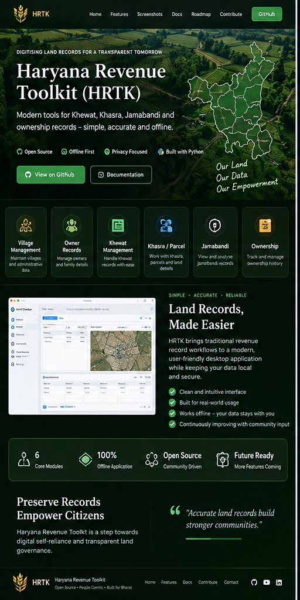

001
Village Management
Structured village and master-data workflows.

Digital tools for land records, revenue workflows and structured information.
HRTK is an offline-first desktop toolkit for working with Haryana revenue-record workflows — including Village, Owner, Khewat, Khasra, Ownership and Jamabandi.
Open source, practical and built as part of the JASS software laboratory.
Focused capabilities, clear workflows and a maintainable foundation.
Structured village and master-data workflows.
Work with ownership accounts and parcel records.
Explore relationships and jamabandi-oriented workflows.
A practical technology foundation selected for local, maintainable and extensible software.